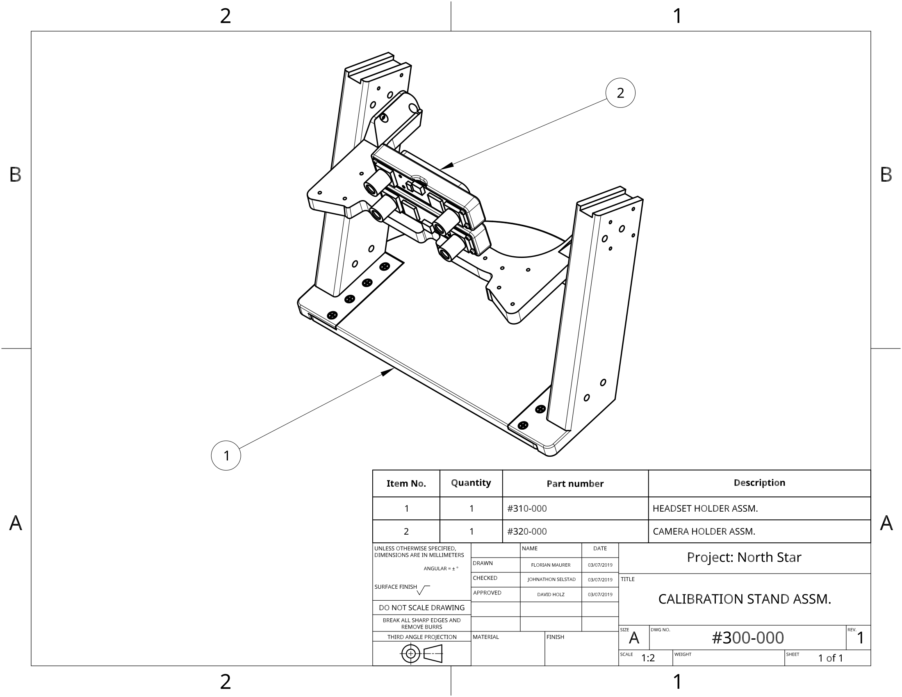
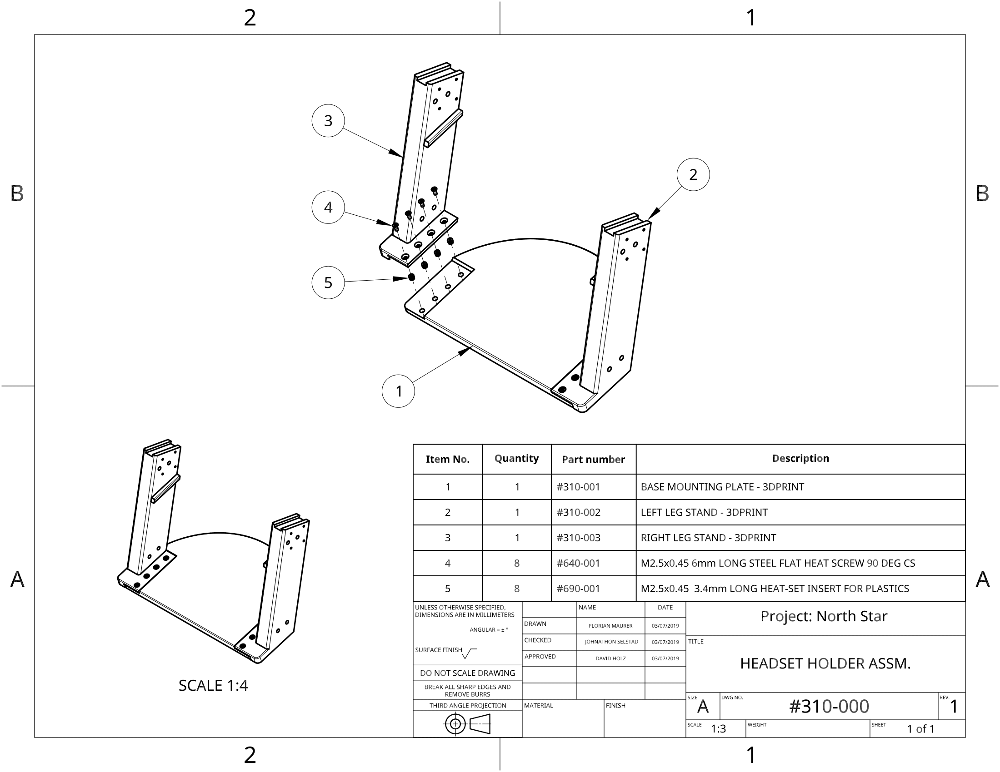
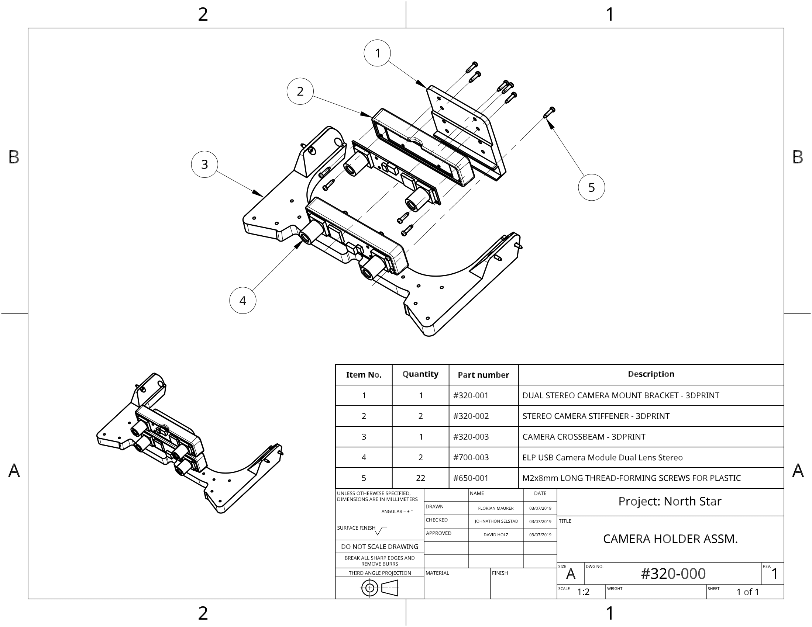

Calibration Setup
This page describes both existing calibration methods, as well as how to align the LeapMotion Controller properly.
Note that Calibration files generated by v1 and v2 are not currently interchangeable
Calibrating Hand Position
Hand position is dependent on the position of the leap motion sensor, make sure your Leap motion sensor has the bottom metal bezel hidden behind the 3d printed housing. You can use Florian's North Star Toolbox to set up your hand position.
Optics Calibration
Due to the nature of 3D printing and assembly each headset is going to be slightly unique and will require going through a calibration process to display the image correctly.
There are currently two ways to calibrate a northstar headset. The first method uses two stereo cameras to calculate the 3D position of the displays and reflectors. The second method uses a single stereo camera, and is currently setup to be able to use the intel t265 camera, which we currently recommend for 6DOF. This allows northstar developers to reuse the t265 rather than purchase two separate stereo cameras.
Calibration V1 and V2 Comparison
| Features | Calibration V1 | Calibration V2 |
|---|---|---|
| IPD adjustment | Yes | In Progress |
| T265 Support | No | Yes |
| Cameras | 2 (stereo) | 1 (stereo) |
| Camera Calibration | Checkerboard Process | Built In or Checkerboard |
| Unity | Yes | Yes |
| OpenVR/Unreal | Yes | In Progress |
Calibration Stand Assembly
Version One and Version Two of the calibration setup share the same 3D printable stand. You can find the assembly instructions below. (Note that they show the instructions for the original dual camera stand)
300-000

310-000

320-000

Calibration Stand Bill of Materials
| Part number | Quantity | Description | Source |
|---|---|---|---|
| #310-001 | 1 | BASE MOUNTING PLATE | 3D PRINT |
| #310-002 | 1 | LEFT LEFT STAND | 3D PRINT |
| #310-003 | 1 | RIGHT LEFT STAND | 3D PRINT |
| #320-001 | 1 | DUAL STEREO CAMERA MOUNT BRACKET | 3D PRINT |
| #320-002 | 2 | STEREO CAMERA STIFFENER | 3D PRINT |
| #320-003 | 1 | CAMERA CROSSBEAM | 3D PRINT |
| #640-001 | 8 | M2.5x0.45 6mm LONG STEEL FLAT HEAT SCREW 90 DEG CS | McMaster #91420a016 |
| #650-001 | 22 | M2x8mm LONG THREAD-FORMING SCREWS FOR PLASTIC | McMaster #96817a212 |
| #690-001 | 8 | M2.5x0.45 3.4mm LONG HEAT-SET INSERT FOR PLASTICS | McMaster #94180a321 |
| #700-003 | 2 | ELP USB CAMERA MODULE DUAL LENS STEREO | Amazon |